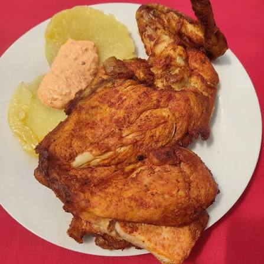

Regresar al recetario
Pollada Peruana
Receta para 12 personas - 6 trutos de pollo
Lo que en la casa siempre a gustado. Esta preparación sirve para freír y a la parrilla.
Puedes acompañarlo con papas sancochadas, ensalada de col o lechuga y cremas. Ideal para fiestas y reuniones. ¡A Leslie le encanta!
Ingredientes:
- 4 Sobres de Ají Especial - Panca
- 10 Dientes de ajo
- 1-2 Cucharadas de paprika dulce
- 2 Cucharaditas de comino
- 2 Cucharaditas de pimienta negra
- 2 Cucharadas de oregano seco
- 3 Cucharadas de mostaza
- 4 Cucharadas de salsa de soya
- 4 Cucharadas de vinagre
- 2 Cucharadas de jugo de limon
- 120ml de cerveza rubia
- 3 Cucharadas de aceite
- 1 Cucharada de azucar
- Sal a gusto
Preparación
- Tritura los 10 dientes de ajo
- En un recipiente grande mezcla el ají panca, ajo, paprika, comino, pimienta y oregano
- Incorpora la mostaza, soya, vinagre y limon
- Añade la cerveza, aceite y azucar. Mezcla hasta obtener un adobo uniforme
- Agrega la sal, después puedes corregir. Debe estar un poquito pasado de sal para que tenga sabor el pollo
- Filetea el pollo tipo pollada, para que el adobo penetre mejor
- Agrega los trozos de pollo a la mezcla.
- Cubre y deja marinar en refrigeración. Idealmente toda la noche; tienes menos tiempo, procura al menos varias horas.
- Cocina el pollo hasta que esté completamente cocinado y bien dorado.
